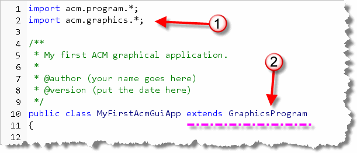
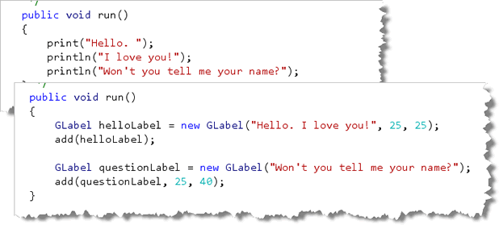
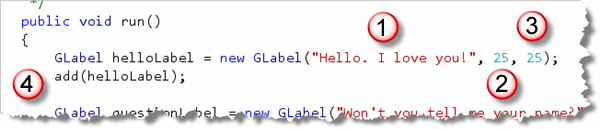
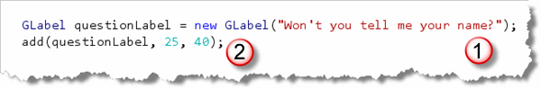
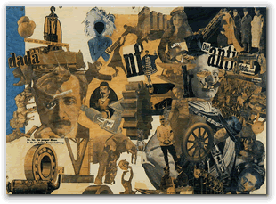
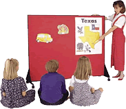
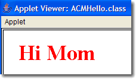
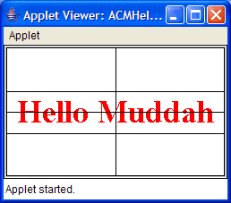

A little earlier in this text, you learned how to use Java's
AWT
A little earlier in this text, you learned how to use Java's
AWT Graphics class to draw ovals, rectangles, and text, and used
that knowledge to draw some simple pictures.
While the drawing methods you learned—drawRect(),
fillOval(), and so on—were simple, they weren't particularly
object-oriented. Instead of dealing with oval objects that know
how to draw themselves, you "issued orders", giving precise instructions
for completing your drawings. If you look back on your self-portrait,
for instance, you'll see that it mostly consists of a sequence of
commands, that have to be carried out in a particular order.
Although we did use a Graphics object to carry out the
work, we also gave precise instructions on how to do the
task, and in what order. This reliance on a specific sequence,
and the focus on actions, is really at the heart of
procedural programming.
Now, though, it's time for us
to start moving away from this style of programming, and to
start working with independent graphical objects.
While the built-in Java class libraries provide support for
creating your own graphical objects, they don't really
have any easy-to-use components. So, for this unit
we'll use the ACM GraphicsProgram class,
and the graphical shapes available in the
acm.graphics package:

If you want to know more about the "built-in" OO drawing capabilities of Java, called Java 2D, you can follow the Sun Java Tutorial trail at: http://java.sun.com/docs/books/tutorial/2d/index.html. The ACM classes that we're using, however, are much easier to use than the built-in Java 2D classes, and in many ways, are more sophisticated as well.
We'll start by using the GLabel class to display
the traditional "Hello, I love you!" program. Then, in the rest
of the text, we'll use many of the other classes to
illustrate different object-oriented techniques and principles.
Your First ACM GraphicsProgram
Like the ACM ConsoleProgram class you used in previous
chapters, the ACM GraphicsProgram class is contained in
the Java library (or archive) file acm.jar,
(which I have already bundled into our customized
version of DrJava).
Open DrJava and create a new file named MyFirstAcmGuiApp.java.
Save the file in your Chapter07 folder, and then follow along to
complete it.
The basic structure for a
GraphicsProgram is almost identical to
the ACM ConsoleProgram you wrote earlier:

In fact, the only differences are:- An additional
importline at the top of the program. This line makes the ACM graphical shapes accessible to your GUI program. - Instead of extending
ConsoleProgram, weextend GraphicsPrograminstead. You recall that this means our application is a kind ofGraphicsProgram.
As we did previously, we'll start by comparing MyFirstAcmGuiApp to its non-GUI sibling, and to the GUI applet you wrote previously.
The run() Method
Because MyFirstAcmGuiApp is an application, not an
applet, it has a run() method like your
first ACM ConsoleProgram. But, it's also a
graphical program, like MyFirstJavaApplet,
although it doesn't use the paint() method.

Comparing therun() methods of your ACM console program
and MyFirstAcmGuiApp, you can see that they are
really pretty different. The console program consists of sequential
input, output, and processing statements.
The MyFirstAcmGuiApp run() method, on the other
hand:
- creates several visual GUI objects
- adds those objects to the surface of the application
- sends messages to the objects
- responds to events generated by those objects
Go ahead and type in the run() method. Then compile and
run your program. When you're ready, let's take a quick look at
the program's graphical objects.
GLabel Objects
The objects we'll use to display text in our ACM graphical
programs belong to a class named GLabel. You create
GLabel objects using the same kind of syntax you'd
use to create any Java object.
SomeClass varName = new SomeClass(<parameters>);
Remember that with objects:
SomeClass varNamecreates an object variable which will hold a reference to the actual "SomeClass" object itself. You replace "SomeClass" with the actual name of the class.new SomeClass(<parameters>)creates the actual object itself on the "heap". The parameters are used to initialize the state of the object.- The assignment statement stores the reference to the actual object in the object variable.
Let's take a look at how the two GLabel objects are
created and used in MyFirstAcmGuiApp.
Creating and Placing GLabel Objects
The first step in using the ACM graphical objects is to create an
object variable. In the picture here, you can see that I've named
my helloLabel.

The Label at the end helps remind me that it's a graphical, user-interface "label" object. The second step (on the same line) is to initialize the object by
using the new operator and a constructor. In the case
of helloLabel, I've used a constructor that requires
three parameters:
- The text we want the
GLabelobject to "manage" for us; in this case, the words "Hello. I love you!" - The horizontal position (in pixels) for the left side of
the
GLabelobject to be positioned. Notice that even though the label hasn't yet been added to the display, it actually "knows" where it belongs. It's "x-position" is part of the object's state. - Similarly, the vertical position (in pixels) down from the top of the display, is supplied as the third parameter. In our case, the words will appear 25 pixels in from the left and 25 pixels down from the top.
Once we've created our graphical object, we need to add it to
our program. To do that, we use the GraphicsProgram
method named add(), passing it the object that we
want to add to the canvas. (That portion of code is marked (4)
in my snapshot.)
Alternative Methods
When we add this label to the canvas, we don't need to tell it
where it should be located, since we specified that when the
label was constructed. We could have done things differently,
though. For instance, we could have constructed an object
using just the single-parameter constructor, like the
GLabel named questionLabel, shown here:

When you only supply text to theGLabel constructor,
then the x and y position attributes are
set to zero. If I were to add question to the application's
canvas, it would then appear off-screen, sitting right above the
upper-left corner of the program. If that were to occur, then I
could use the setLocation() method to position the label
in a separate step.
Another alternative is to do what this example does, and use an
alternate form of the GraphicsProgram add() method,
one that takes the location to place the object as the second and
third parameters. When you use this version of add(),
then your program automatically sets the GLabel's
x and y attributes before placing the
label on the screen.
ACM Graphics Metaphors
OK, OK, I admit that when you run the MyFirstAcmGuiApp program
it doesn't look a lot (read any) more impressive than
the MyFirstJavaApplet program, where we
used Java's drawString() method to do pretty much
the same thing. Of course MyFirstAcmGuiApp is also an application
instead of just an applet, but there is also one larger difference.
In MyFirstAcmGuiApp the variable helloLabel is an
object that you can send messages to and manipulate
on the screen. When you use drawString() all you
have are some pixels painted on the display.

One way to think about ACM graphical programs it to compare it to a collage, like "Cut with the Dada Kitchen Knife through the Last Weimar Beer-Belly Cultural Epoch in Germany" by the artist Hannah Höch from the State National Gallery in Berlin.An artist like Höch creates her work by assembling various objects on a background canvas. As you can see from the example here, those object can be geometrical shapes, newspaper clippings, images from magazines, and so on.
ACM graphics programs work in a similar way. Instead of magazine clippings, and painted shapes, programmers create their applications by placing graphical objects at various positions on the screen area, called the canvas. In the ACM graphics package, there are analogues for each of the graphical objects that a collage artist might use. You can find a listing of these objects in the class hierarchy at the very top of this lesson.
The Felt-Board Metaphor

When you were in elementary school, you probably played with a felt-board or flannel-graph. With a felt board, a child (or teacher) can create pictures by taking shapes of colored felt and then sticking them on the large felt-board that acts as the background for the picture as a whole.With the felt-board pictures, you could place shapes on top of other shapes, and easily move each piece independently until you had just the picture you wanted.
The ACM Graphics objects are kind of like that. You can place them wherever you like, and move them independently without disturbing the other objects on the screen.
Exploring GLabel
The ACM graphical objects are different from the simple shapes you'd use on a felt board, or the newspaper clippings that an artist would use in a collage, though: the ACM shapes are active—they actually know how to do things.
To see what kinds of things you can do with GLabel
objects, like helloLabel head on over to the
ACM Library docmentation site, and locate and click
the link for the GLabel class.

As an alternative in DrJava, you can just place your cursor on the
word GLabel in your source code, and then use the hot-key
combination, Control+F6 to open the documentation for the
word under the cursor. This will launch the default browser on
your machine. You can find more information about the ACM JTF classes at:
Eric Roberts' Stanford University JTF Web Site.
You might also be interested in the
ACM Tutorial
(pdf) available here.
Changing Appearance
There are three things you can do to change the appearance of the labels you create:
- change the font used by the label.
- change the color that the words are displayed in.
- change the words themselves.
Each of these requires you to use a mutator method that changes the state of your label object. Let's look briefly at each of them.
Changing the Font
You can change the font used by the label by creating a
Font object, and then calling your label's
setFont() method, like this:
Font mediumFont = new Font("Sansserif", Font.PLAIN, 28);
helloLabel.setFont(mediumFont);
 This displays your greeting in a 28-point Arial or Helvetica-style
font so your program looks like the screenshot shown to the right.
This displays your greeting in a 28-point Arial or Helvetica-style
font so your program looks like the screenshot shown to the right.
With ACM graphical programs, you can also
use the setFont() method with
a String object, instead of a Font.
When you do this, the String needs to be in
the form: "family-style-size". For the style, instead of
using constants, like Font.PLAIN, just use
bold, italic, plain, or bolditalic.
The style portion is not case-sensitive, though, so you can
use BOLD or Bold if you like.
 If you want
to leave one of the three parts "as-is", then just use
an asterisk, like this:
If you want
to leave one of the three parts "as-is", then just use
an asterisk, like this: helloLabel.setFont("*-bold-*);.
Internally, this version of setFont()
uses Java's Font decode() method to
create an unnamed Font object from the String
you pass as an argument.
Here's a line that changes the font to a 36-point bold, serif-style font, as shown in the picture on the right.
helloLabel.setFont("Serif-bold-36");
Changing Colors

You can change the color for the text that's displayed by sending thesetColor() message to the label, like this:
helloLabel.setColor(Color.RED);
Of course, you can use a custom Color object,
and not just the constant that I used here. Unlike many of
the other ACM Graphics objects, you can't change the background
color, only the foreground. (You can change the background color
of the entire canvas itself, of course.)
Remember, if you do change the colors or set the fonts, you'll
need to add the import java.awt.*; line to your program
so that the compiler can find the Color and Font
classes.
Changing the Message
 You change the message that the label displays by providing
your object with a different
You change the message that the label displays by providing
your object with a different String using the
setLabel() method.
Here's a piece of code that changes the message to represent the opening line from Alan Sherman's classic novelty song about a little boy stuck at summer camp and the letter he sends to his parents:
helloLabel.setLabel("Hello Muddah");
Location, Location, Location
In the MyFirstAcmGuiApp program, we positioned the
GLabel object, helloLabel, by supplying
two additional arguments representing the horizontal, or x
location (measured from the left-hand side of the program's
window), and the vertical, or y location, measured
from the top of the window.
Most of the components in the acm.graphics package
use similar x-y coordinates to position themselves, using the
upper-left corner of the component as the origin. The
GLabel class acts a little differently. Instead
of using the upper-left corner for the origin, GLabel
uses the left-hand side of the text, and the baseline as
shown in this figure:
 You can find out if any letters in your label are "hanging down" (like
a lowercase p, q, or j would do), by calling the method
You can find out if any letters in your label are "hanging down" (like
a lowercase p, q, or j would do), by calling the method
getDescent(). Similarly, you can find the height of the tallest
character above the baseline using the getAscent()
method.
Setting the Position
You've already seen how you can supply the x,y parameters when
constructing the object, or, when calling the add()
method. We could have done this as well:
GLabel helloLabel = new GLabel("Hello, I love you!");
add(helloLabel);
helloLabel.setLocation(25, 25);
All three of these techniques have the effect of changing the
x,y values stored in the object helloLabel. When the
state of the object changes, its display on screen changes
to reflect its new state.
Centering Text

One thing you may want to do, is to center a label or other graphical component. This is easy to do in a console application, because you know the length of eachString, and
all you need is a loop and some simple logic.
With graphical applications, though, it's much, much more
difficult. In the MyFirstJavaApplet program we had
to repeatedly adjust the x,y values used by drawString()
to get the text to appear in the correct location. Then, when we
changed the font size, everything got messed up again.
The good news is, that with graphical objects, centering and other positioning is as simple conceptually and arithmetically, as it was with console applications. All you need to do is:
- Divide the width and height of the program window in half. This gives you the center of the screen.
- Divide the width of the
GLabelobject in half as well. Subtract half the label width from the center point for the x argument. The y argument is a little harder. What seems to work best visually is to add one quarter of the label height to the center point for the y argument. Note that this means the y argument will always be below the window center point, because the label's origin is at the baseline, not the upper-left corner of the text.
To find the width or height of the program window or of the
helloLabel variable, use the getWidth()
and getHeight() methods. For the width of the program
window, you'll leave the receiver portion empty, or use the
keyword this.
Here's an the example that centers the phrase horizontally and vertically as shown in the screenshot at the beginning of this section.
double width = this.getWidth(); // or skip the this
double height = getHeight();
double widthLbl = helloLabel.getWidth();
double heightLbl = helloLabel.getHeight();
helloLabel.setLocation(width/2 - widthLbl/2, height/2 + heightLbl/4);
Drawing Lines with GLine
If you look at the screenshot from the last section, you'll see
that I've also drawn a few lines so you can see the visual effect
of centering your text. Rather than using the drawLine()
method, though, I've used the ACM GLine class.
To construct a GLine object, you pass in four
values that represent the end-points of the line segment:
x1, y1 for the start of the line,
and x2, y2 for the third and fourth
arguments, and the position where the line ends.
Given the variables defined in the previous section, here
are the instructions to create a GLine object
named topLine and add it to the program:
GLine topLine =
new GLine( 0, height/2 - heightLbl/2, // x1, y1
width,
height/2 - heightLbl/2); // x2, y2
add(topLine);
Note that x1 is 0, the left-hand side of the screen,
and x2 is width, which is the right-hand side
of the screen. Both y1 and y2 have the
same values, calculated by finding the vertical center of the screen
(height/2) and then subtracting half the height of the
GLabel object (heightLbl/2). Because both
y parameters are the same, the result is a horizontal line.
The horizontal and vertial center lines, and the horizontal line falling below the text were all created and placed using similar calculations.

ACM Graphics Summary
- Using the AWT
Graphicsmethods to draw pictures is simple, but not very object-oriented. Instead of creating anOvalobject and sending it messages, we told aGraphicsobject to draw an oval. - The ACM
graphicspackage contains a collection of easy-to-use and sophisticated graphical objects that allow you to write graphical applications in an object-oriented style. - To create an ACM GUI program,
importboth theacm.programand theacm.graphicspackages, and thenextendtheGraphicsProgramclass. Your GUI app can have both aninit()method (like applets), and arun()method, like an ACM console application. - Instead of sequential IPO statements, an ACM GUI program creates
independent graphical objects, like
GLabeland then sends messages to those objects and responds to events generated by those objects. - Instead of being drawn in a
paint()method, ACM graphical objects are added to the canvas of the GUI program. Writing an ACM GUI program is similar to creating a collage or working with a child's felt-board. - The
GLabelclass is used for textual output in an ACM GUI app. When you create aGLabelobject, you can specify its text and its initial location, or, you can simply supply the text and set the location later. - Once you have created a graphical object, you use the
application's
add()method to place it on the canvas. You may specify a location when you add the object to the screen. - Use the different
GLabelmethods to change the font used by the label, the text displayed by the label, or the color of the letters themselves. - You can use other methods to change the location of the label as your program runs, and determine the height and width of the text label itself. Using this information, you can easily center your text on the screen.
- The
GLineclass is used in place of thedrawLine()method in theGraphicsclass.